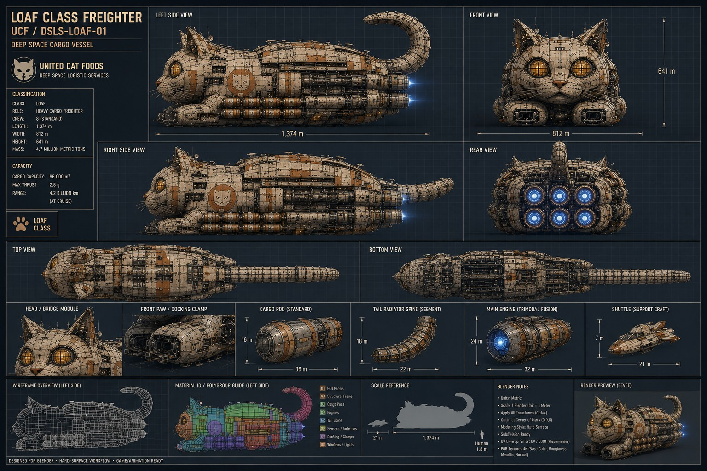
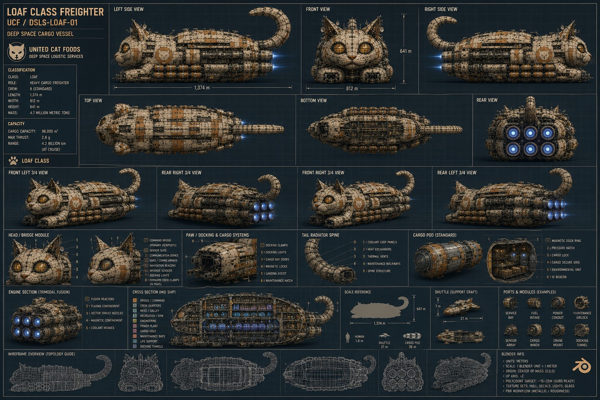
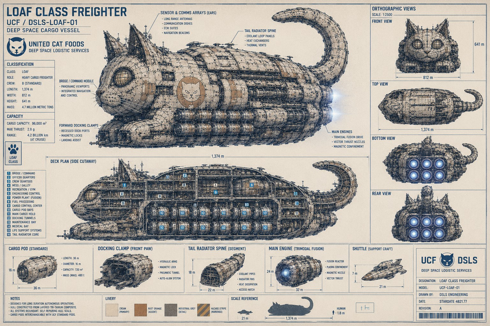

Corporate Archive / Art
Art Archive
Brand art from the United Cat Foods public record — broadcast plates, facility renders, and operational photography. Click any plate to view full resolution.
Identity & operations

Facilities

Product plates — the "Jupiter" series

Fleet schematics & blueprints
Engineering plates for U.C.F. vessels. Click any sheet to open it full-resolution.
LOAF Class Freighter — UCF / DSLS-LOAF-01



About the archive
The full United Cat Foods art record runs to roughly 40+ AI-generated brand images — retro sci-fi ad posters ("Surfer Joe and Moe the Sleaze," "T-Bone / Got Mashed"), the "Free Candy" muscle car, Certified Fidd farmcore, loaf and train scenes, and more. This gallery is built to expand: additional plates drop into wiki/art/ and slot into the grids above.